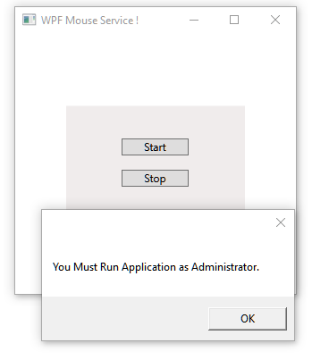

Porting WCF Service Contracts to F# - WCF hosted by WPF - Fsharp only
Introduction
Porting WCF Service Contract to F# - WCF hosted by WPF application - F# Fsharp only.
How to import user32.dll in F# application.
[<DataContract>],[<ServiceContract>], [<OperationContract>], mouse_event.
This application hold mouse service which you can use for mouse manipulation.
This application part of solution which use WindowsPhone as trackpad.
Building the Sample
Run Visual Studio as Administrator, bring project, RUN and click [Start].
This application hold mouse service which you can use for mouse manipulation.
The mouse_event function synthesizes mouse motion and button clicks.
https://msdn.microsoft.com/en-us/library/windows/desktop/ms646260(v=vs.85).aspx
Now you can add service to any your application - http://localhost:8080/WindowsPhoneMouseService
(For example you can use this service inside WindowsPhone - Silverlight application )

If application RUN as Administrator [Start]

After that open your project and add service.

<UserControl
xmlns="http://schemas.microsoft.com/winfx/2006/xaml/presentation"
xmlns:x="http://schemas.microsoft.com/winfx/2006/xaml"
xmlns:mc="http://schemas.openxmlformats.org/markup-compatibility/2006"
xmlns:d="http://schemas.microsoft.com/expression/blend/2008"
Height="130" Width="200.0" >
<Grid x:Name="grid" Focusable="True" Background="#FFF0ECEC" >
<Button x:Name="btnStart" Content="Start" HorizontalAlignment="Left" Margin="62,36,0,0" VerticalAlignment="Top" Width="75" Background="#FFDEDDDD" />
<Button x:Name="btnStop" Content="Stop" HorizontalAlignment="Left" Margin="62,71,0,0" VerticalAlignment="Top" Width="75" Background="#FFDEDDDD"/>
</Grid>
</UserControl>
namespace WCFhostByWpfFsharpOnly open System open System.ServiceModel open System.ServiceModel.Description open System.Windows.Controls open System.IO open System.Windows.Markup open System.Reflection open Utilities open Microsoft.FSharp.Control open System.Windows type WpfMouse() as this = inherit UserControl() // XAML - MUST be Embedded Resource let mySr = new StreamReader(Assembly.Load("WCFhostByWpfFsharpOnly").GetManifestResourceStream("WpfMouse.xaml")) do this.Content <- XamlReader.Load(mySr.BaseStream):?> UserControl let mutable btnStart : Button = this.Content?btnStart let mutable btnStop : Button = this.Content?btnStop let mutable host : ServiceHost = null let startServer() = let baseAddress = new Uri("http://localhost:8080/WindowsPhoneMouseService") // WindowsPhoneMouseService - will be used in WindowsPhone Project do host <- new ServiceHost(typeof<MouseEvent>, [|baseAddress|]) do host.Description.Behaviors.Add(new ServiceMetadataBehavior(HttpGetEnabled = true)) do host.AddServiceEndpoint(typeof<IMouseEvent>, new WSHttpBinding(), baseAddress) |> ignore try do host.Open() do btnStart.IsEnabled <- false with | _ -> MessageBox.Show("You Must Run Application with ADMIN right.") |> ignore do btnStart.Click.Add(fun _ -> do startServer()) do btnStop.Click.Add(fun _ -> if not (isNull host) && not btnStart.IsEnabled then do host.Close() // host MUST be opened ! do Environment.Exit(0)) // // For TEST by Keys ... uncomment ... // // Uncomment also one line in App.fs (see App.fs) // let MOUSEEVENTF_ABSOLUTE = 0x8000 // let MOUSEEVENTF_LEFTDOWN = 0x0002 // let MOUSEEVENTF_LEFTUP = 0x0004 // let MOUSEEVENTF_MIDDLEDOWN = 0x0020 // let MOUSEEVENTF_MIDDLEUP = 0x0040 // let MOUSEEVENTF_MOVE = 0x0001 // let MOUSEEVENTF_RIGHTDOWN = 0x0008 // let MOUSEEVENTF_RIGHTUP = 0x0010 // let MOUSEEVENTF_XDOWN = 0x0080 // let MOUSEEVENTF_XUP = 0x0100 // let MOUSEEVENTF_WHEEL = 0x0800 // let MOUSEEVENTF_HWHEEL = 0x01000 // // let moveCusore(direction : string) = // let mutable x = 0 // let mutable y = 0 // let mutable action = 0 // // match direction with // | "Up" -> action <- MOUSEEVENTF_MOVE // y <- -3 // x <- 0 // Imported.mouse_event((uint32)action, (uint32)x, (uint32)y, (uint32)0, (unativeint)0); // // | "Down" -> action <- MOUSEEVENTF_MOVE // y <- +3 // x <- 0 // Imported.mouse_event((uint32)action, (uint32)x, (uint32)y, (uint32)0, (unativeint)0); // // | "Left" -> action <- MOUSEEVENTF_MOVE // y <- 0 // x <- -3 // Imported.mouse_event((uint32)action, (uint32)x, (uint32)y, (uint32)0, (unativeint)0); // // | "Right" -> action <- MOUSEEVENTF_MOVE // y <- 0 // x <- +3 // Imported.mouse_event((uint32)action, (uint32)x, (uint32)y, (uint32)0, (unativeint)0); // // | "L" -> Imported.mouse_event((uint32)MOUSEEVENTF_LEFTDOWN , (uint32)0, (uint32)0, (uint32)0, (unativeint)0) // Thread.Sleep(100) // Imported.mouse_event((uint32)MOUSEEVENTF_LEFTUP, (uint32)0, (uint32)0, (uint32)0, (unativeint)0) // // | "R" -> Imported.mouse_event((uint32)MOUSEEVENTF_RIGHTDOWN, (uint32)0, (uint32)0, (uint32)0, (unativeint)0) // Thread.Sleep(100) // Imported.mouse_event((uint32)MOUSEEVENTF_RIGHTUP, (uint32)0, (uint32)0, (uint32)0, (unativeint)0) // // | _ -> ignore() // // // let keyDown (e : KeyEventArgs) = // do e.Handled <- true // match e.Key with // | Key.Down -> moveCusore("Down") // | Key.Up -> moveCusore("Up") // | Key.Left -> moveCusore("Left") // | Key.Right-> moveCusore("Right") // | Key.L -> moveCusore("L") // | Key.R -> moveCusore("R") // | _ -> ignore() // // // member x.UserKeyDown(e : KeyEventArgs) = keyDown (e)
<UserControl xmlns="http://schemas.microsoft.com/winfx/2006/xaml/presentation" xmlns:x="http://schemas.microsoft.com/winfx/2006/xaml" xmlns:mc="http://schemas.openxmlformats.org/markup-compatibility/2006" xmlns:d="http://schemas.microsoft.com/expression/blend/2008" Height="130" Width="200.0" > <Grid x:Name="grid" Focusable="True" Background="#FFF0ECEC" > <Button x:Name="btnStart" Content="Start" HorizontalAlignment="Left" Margin="62,36,0,0" VerticalAlignment="Top" Width="75" Background="#FFDEDDDD" /> <Button x:Name="btnStop" Content="Stop" HorizontalAlignment="Left" Margin="62,71,0,0" VerticalAlignment="Top" Width="75" Background="#FFDEDDDD"/> </Grid> </UserControl>
Mouse Code
let MOUSEEVENTF_LEFTDOWN = 0x0002
let MOUSEEVENTF_LEFTUP = 0x0004
let MOUSEEVENTF_MIDDLEDOWN = 0x0020
let MOUSEEVENTF_MIDDLEUP = 0x0040
let MOUSEEVENTF_MOVE = 0x0001
let MOUSEEVENTF_RIGHTDOWN = 0x0008
let MOUSEEVENTF_RIGHTUP = 0x0010
let MOUSEEVENTF_XDOWN = 0x0080
let MOUSEEVENTF_XUP = 0x0100
let MOUSEEVENTF_WHEEL = 0x0800
let MOUSEEVENTF_HWHEEL = 0x01000